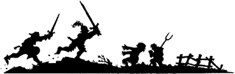

5
A shrill cockcrow heralds the break of day. By the time you have dressed and gathered together your equipment, Cyrilus is waiting for you in the courtyard below.
‘A glorious day,’ he says cheerfully, pointing up at the cloudless sky with his slender oaken staff. ‘We’ll have no difficulty reaching the Halfway Inn by nightfall.’
You bid farewell to the innkeeper and his son and urge your horses out onto the narrow street that leads to the west gatehouse. By mid-morning you are riding across gentle hills crested with yellow-leaved trees. The hilltops are shrouded with mist, but occasional rays of sunshine break through to lighten the lush green fields below. Time passes swiftly as Cyrilus recounts the histories and legends of the area. You learn that the rich and fertile kingdoms bordering the River Storn have a wild and turbulent past, swept by wars, divided by empires, split by national rivalries and the ambitions of petty princes who prey upon one another and the rest of the populace. Lyris is embroiled in war with Magador, Delden with Salony, and Salony with Slovia. Battles are fought, lives are lost and the land is pillaged with grim regularity—only the mercenaries and the crows seem to prosper from the continual conflicts.
{kind=link}

It is mid-afternoon when you catch sight of a small village on the road ahead. There are many wagons parked at the side of the highway, and a crowd has gathered in a field nearby. As you ride past, you notice a large placard nailed to one of the wagons:
Entrance Fee: 2 Gold Crowns
First Prize: The Silver Bow of Duadon
If you wish to enter the tournament, turn to 141.
If you do not wish to or cannot afford to enter, continue on your way and turn to 210.